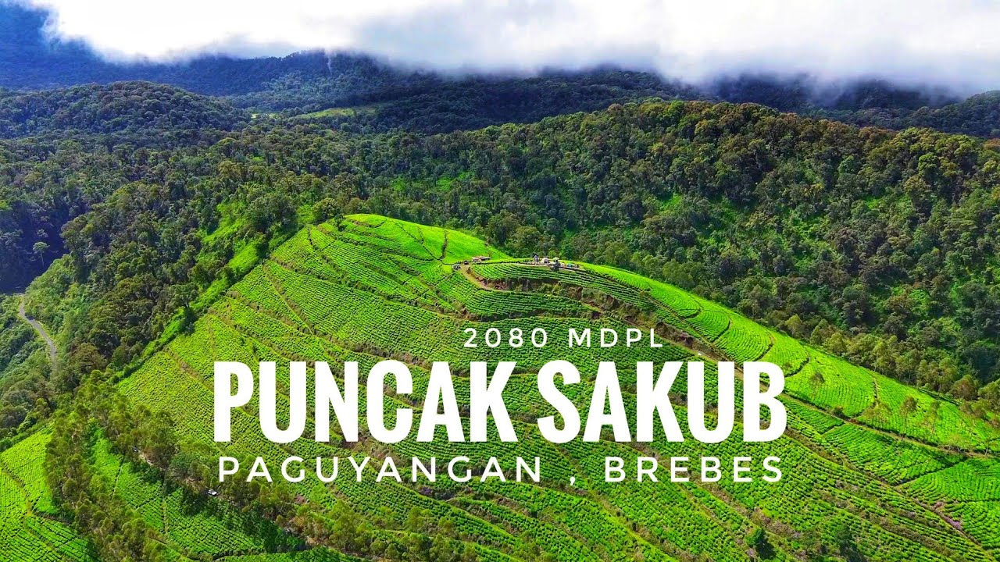
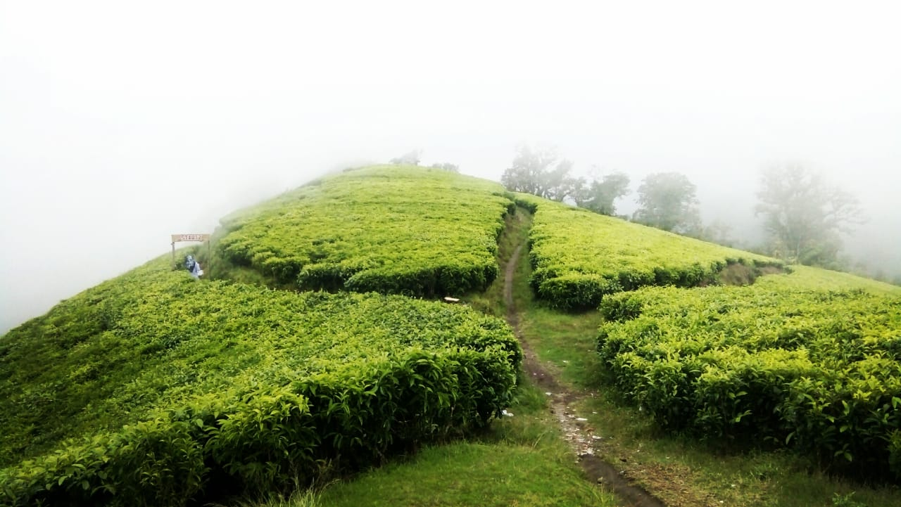
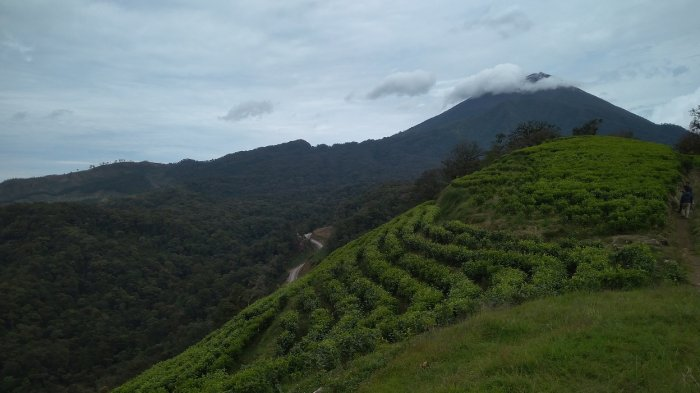
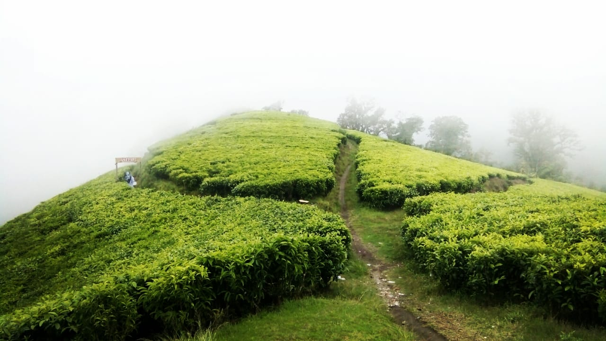
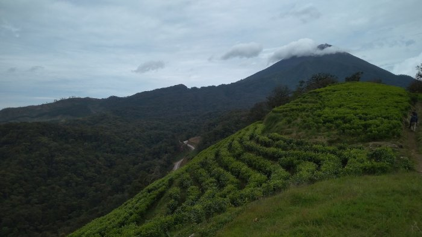
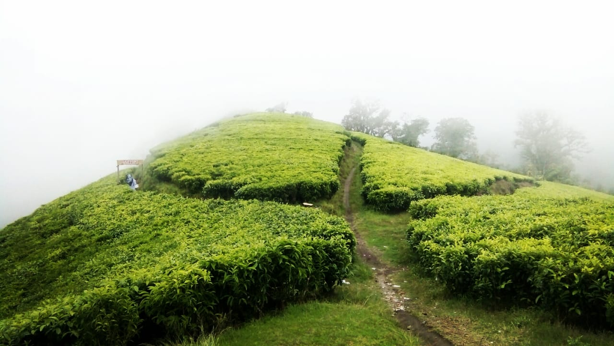
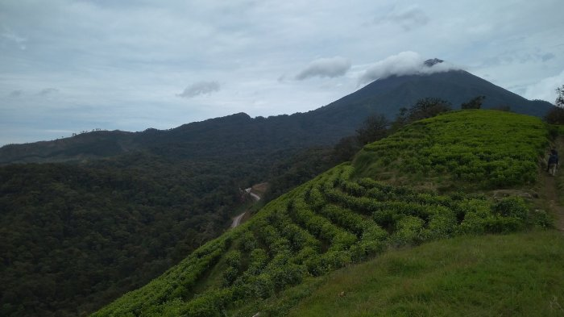
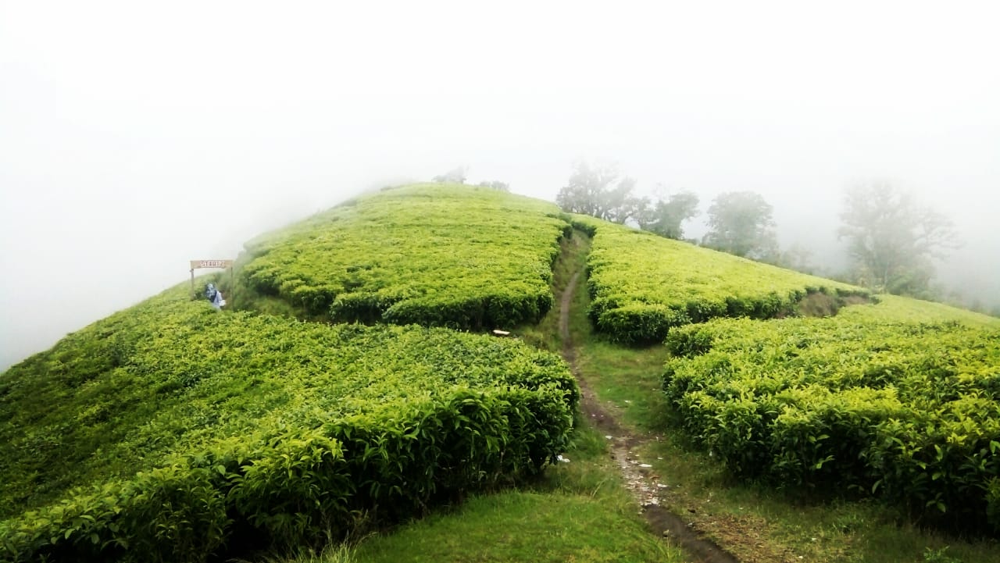
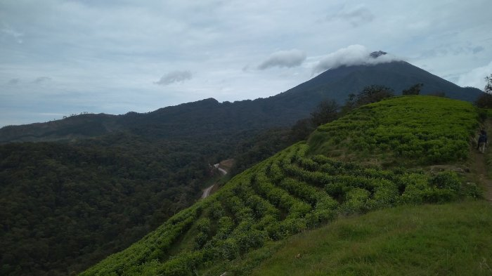

GALLERY



 





CAMPING
HOLIDAY, VIEW SUNRISE, REFRESHING
Puncak Sakub adalah sebuah destinasi wisata alam yang terletak di Bumiayu, Kabupaten Brebes, Jawa Tengah. Tempat ini berada di kawasan perbukitan dengan ketinggian yang menawarkan panorama alam yang memukau, termasuk pemandangan hijau pepohonan, perbukitan, dan hamparan sawah di sekitarnya. Udara di Puncak Sakub sejuk dan segar, menjadikannya tempat yang cocok untuk melepas penat dari keramaian kota.
Puncak Sakub populer di kalangan wisatawan lokal maupun luar daerah yang ingin menikmati keindahan alam, terutama saat matahari terbit atau terbenam. Selain keindahan alam, di tempat ini juga disediakan beberapa fasilitas seperti spot foto yang estetik, area parkir, dan warung-warung kecil untuk membeli makanan dan minuman. Jalur menuju Puncak Sakub cukup menantang, tetapi pemandangan yang disuguhkan di sepanjang perjalanan hingga mencapai puncaknya sangat sepadan dengan usaha yang dikeluarkan.
Bagi penggemar trekking dan pecinta fotografi, Puncak Sakub menawarkan pengalaman yang tak terlupakan di ketinggian dengan suasana yang masih asri dan alami.


Untuk menjangkau Puncak Sakub, akses jalan cukup menantang karena jalur yang berbukit dan berkelok, namun bagi yang menyukai petualangan, perjalanan ini menjadi bagian dari daya tarik tersendiri..
Jl.kaligua Kabupaten Bumiayu Brebes - Jawa Tengah
kontak = 0895383222953
Email = nugiarmasnurizky@gmail.com